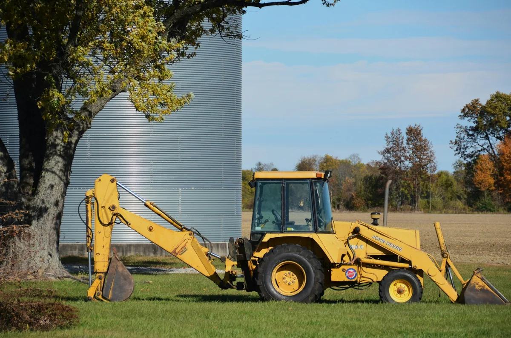
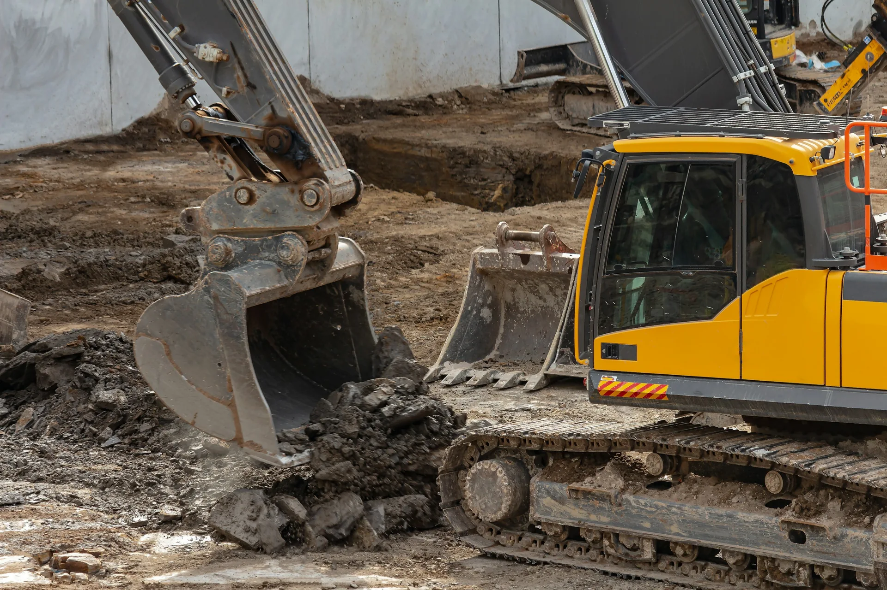

Excavacions a Rubí
Som una empresa dedicada a les excavacions i al moviment de terres. Preparem el terreny per a la teva obra.
Els nostres serveis
- Excavacions i moviment de terres.
- Anivellament de terrenys.
- Excavació per a piscines.
- Lloguer d’una retroexcavadora.
La nostra maquinària
Retroexcavadora

Tenim una retroexcavadora per fer treballs d’excavació. També es pot llogar amb consulta prèvia.
Giratòria

Tenim una giratòria per a excavacions i moviment de terres.
Les fotografies són il·lustratives i no corresponen a les màquines de MMP.
Lloguer de retroexcavadora a Rubí
Disposem d’una retroexcavadora per llogar. Consulta la disponibilitat, el preu i les condicions.
Demanar informacióContacte
Telèfon: +34 600 000 000
Correu: info@mmp-excavaciones.example
Ubicació: Rubí, Barcelona
Horari: de dilluns a divendres, de 8 a 18 h.
Projecte acadèmic. Les dades de contacte i l’horari són ficticis.